{kind=link}
Sarvar Abdullaev
Email / Phone / One-page CV / Full CV / Google Scholar / LinkedIn / Github
I am an AI engineer and researcher with 15+ years of experience in developing systems for recruiting, precision agriculture, and environmental monitoring. I hold the position of an Associate Professor at Inha University in Tashkent. I am also a co-founder and CTO of amudar.io - an agritech startup.
I did my PhD in multi-agent systems at King's College London. My research explored auction-based mechanisms for option pricing and resulted in several peer-reviewed publications.
I am interested in researching evolutionary dynamics of various ecosystems through multi-agent simulations, and apply my findings for solving the problems of climate change and agriculture.
Currently, I am on sabbatical as a visiting scholar at WyGIST, University of Wyoming, where I am working on geospatial reasoning models to predict wildfire risk and its impact on communities.
Below are some of the applied projects I have completed together with my colleagues at amudar.io:
[project presentation]
- Deployed 110+ weather stations across Uzbekistan — the nation's largest agricultural weather monitoring network.
- Continuously collect 8+ environmental parameters (temperature, humidity, soil temperature, moisture, wind, precipitation) and feed AI-powered pest/disease forecasting models covering 30+ agricultural threats.
- Integrated evapotranspiration calculations with multi-depth soil sensors to enable precision irrigation scheduling, achieving 20-30% water savings.
- Platform provides automated recommendations for spraying windows, sowing schedules, and soil trafficability based on weather forecasts and 40-year historical climate data.
- Trained 100+ farmers and agricultural specialists; typical ROI of 1-2 years through increased yields (15-30%), reduced crop losses (20-40%), and decreased pesticide use (30-80%).
- Featured in 15+ partnerships with UNDP, IWMI, IFAD, ICARDA for climate resilience and transboundary water management.
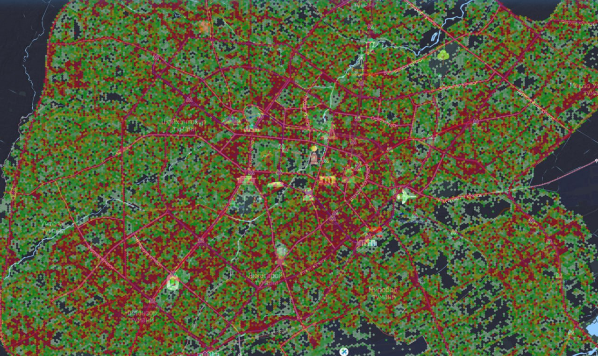
[project demo]
- Designed and deployed 10 air pollution stations across Tashkent city
- Analysed the impact of urban traffic, wind speed and other climate data on pollutant concentrations such PM1.0, PM2.5 and PM10.0
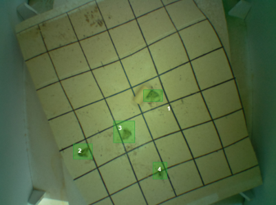
[featured article]
- Designed and deployed 12 smart pheromone traps across Ferghana valley
- Implemented computer vision model for counting moths from trap images
- Used moth counting data to determine biofix date for degree-day computation of moth's development stage
- Developed reinforcement learning model that integrate pheromone trap data with pest development cycle prediction models
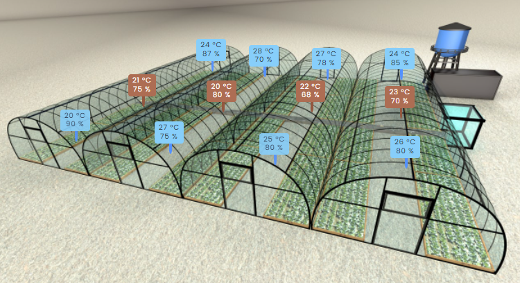
[project presentation]
- Designed a sensor network for monitoring the use of natural gas while heating greenhouses
- Analysed the impact of solar radiation, outdoor/indoor temperature and humidity, wind speed, ventilation to the heating efficiency
- Generated operational recommendations for controlling the heating system
- Winner of CGIAR's AgriTech4Uzb 2024 competition (571 applications, 78 countries)
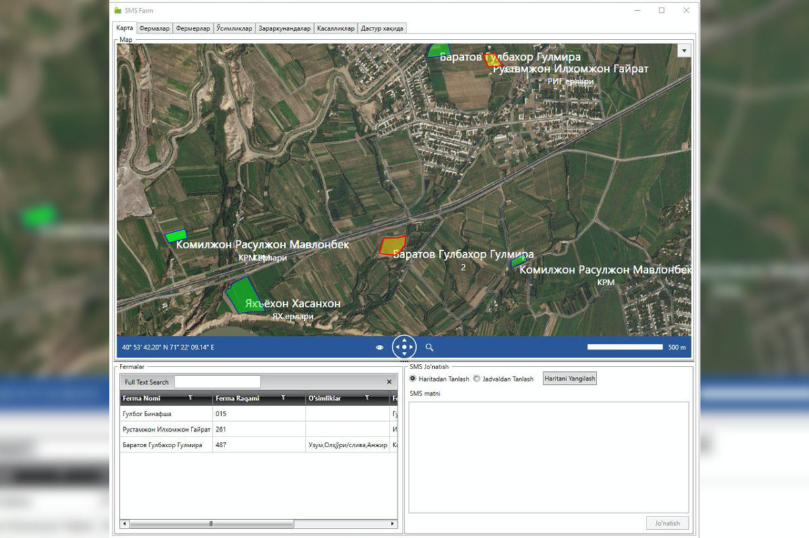
[project demo] / [featured article]
- Developed a software solution for early SMS notification of farm-owners on disease and pest outbreaks
- Used offline QGIS, pre-cached maps and GSM dongle to allow quarantine inspectors to disseminate SMS alerts on remote locations
- Successfully deployed in State Plant Protection and Quarantine Service of Ferghana valley, Uzbekistan
I have published papers in variety of topics involving option pricing, auction theory, market design, algorithmic trading, web caching and performance evaluation.
Below are some of my papers from conference proceedings and journals:
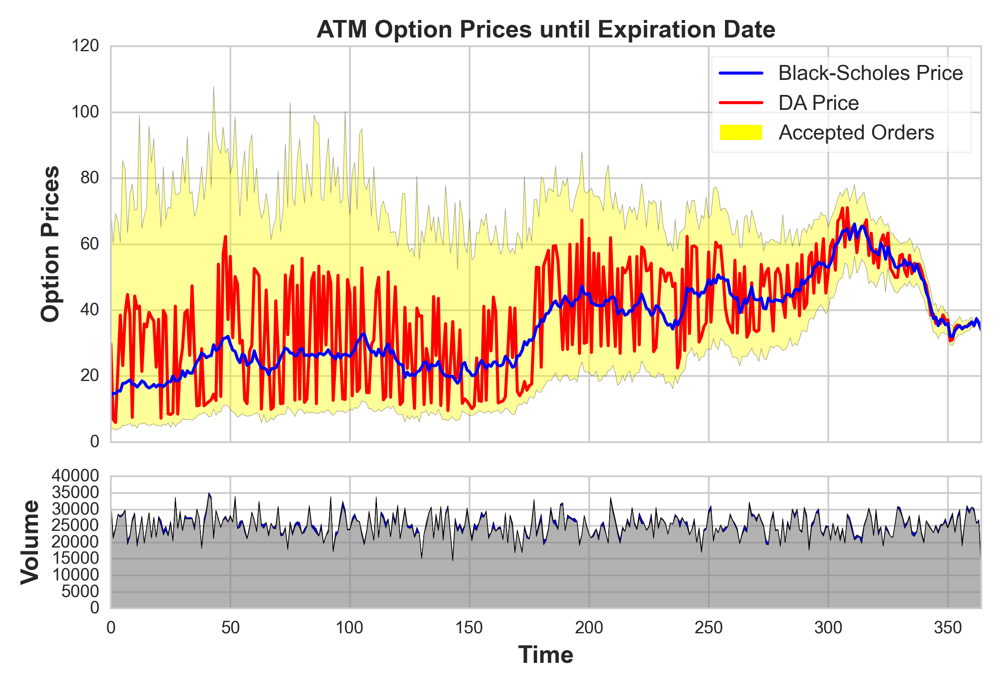
In Proc. of 22nd European Conference on Artificial Intelligence, Hague 2016
[paper]
Simulation of European options market in McAfee's double auction environment with traders using logarithmic market-scoring rule (LMSR) for bidding their random predictions about future asset prices.
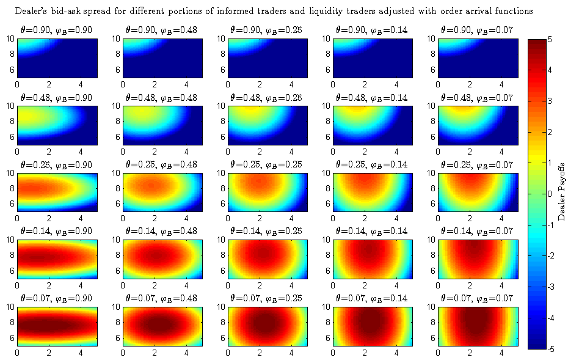
In Proc. of 2nd European Workshop on Chance Discovery and Data Synthesis, Hague 2016
[paper]
Simulation of European options market using McAfee's mechanism for traders using logarithmic market-scoring rule (LMSR) for expressing their asset price predictions through option trading strategies such as bullish/bearish/butterfly spreads.
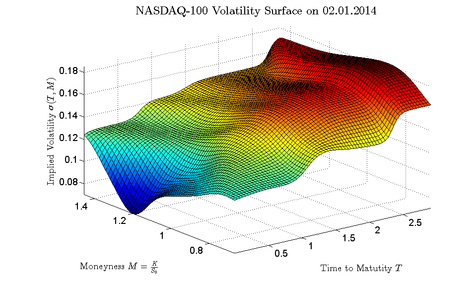
In Proc. of 12th European Conference on Multi-Agent Systems, Prague 2015
[paper]
Provides an overview of option market simulation mechanisms adapted from McAfee's double auctions, open book continuous double auction and combinatorial exchanges.
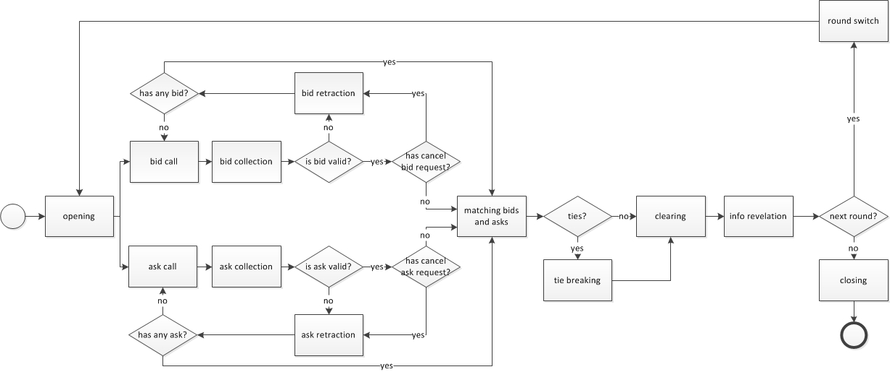
In Proc. of 16th International Workshop on Agent Mediated Electronic Commerce and Trading Agents Design and Analysis, Paris 2014
[paper]
Provides early simulation results of Parke's combinatorial exchange mechanism using ILP formulation and solvers CVX Research and Gurobi for zero-intelligent agents.
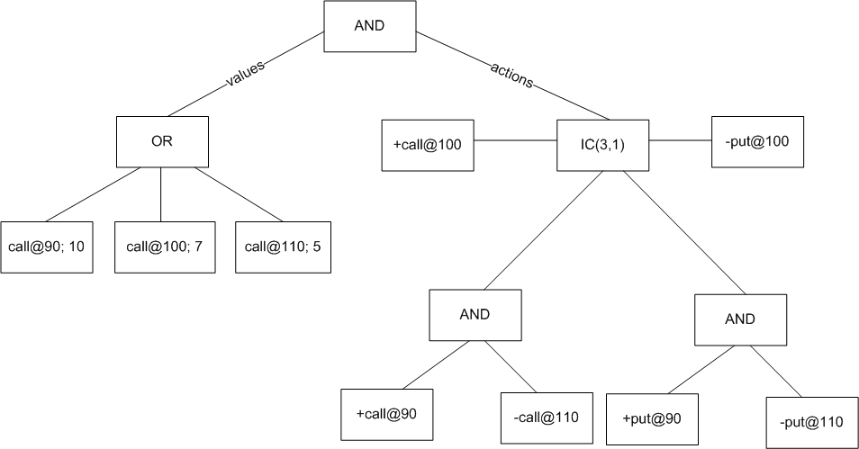
In Proc. of 4th Big Data Applications and Services, Tashkent 2017
[paper]
Introduces market settlement rules for traders using option trading strategies using Tree-Based Bidding Language (TBBL) and ILP formulation of Winner Determination problem.
In Proc. of MITA2008, Chiang mai 2008
[paper]
Presents an algorithm for drawing spiral shaped patterns inspired by phyllotaxis.
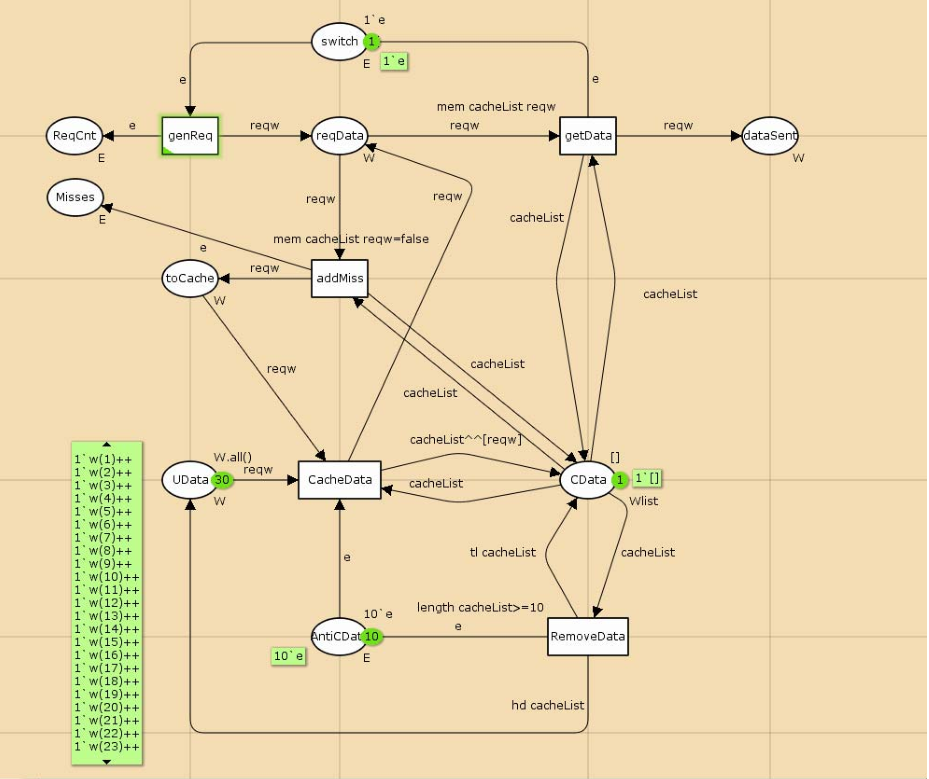
Journal of Society for e-Business Studies, S. Korea 2008
[paper]
Provides a Colored Petri Net model for the evaluation of the performance of web caching algorithms with related content prefetching.
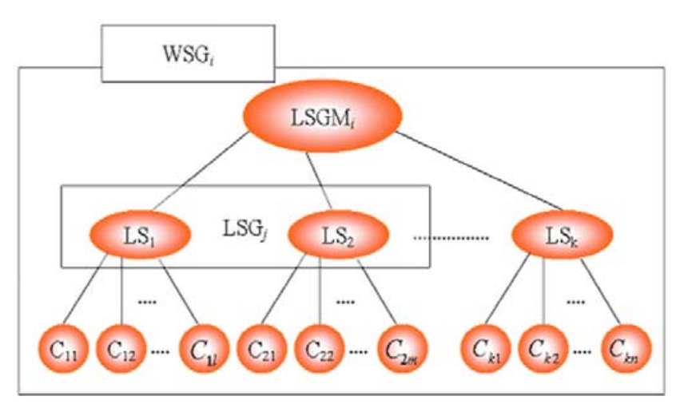
Journal of Universal Computer Science, 2008.
[paper]
Describes a web caching algorithm for separated caching of large-sized and small-sized web objects.
Last updated on 29/09/2025